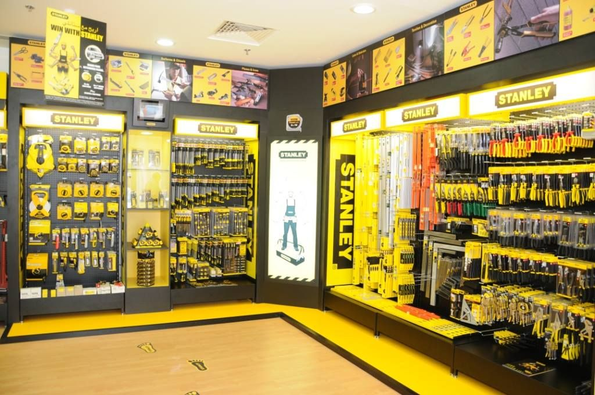

Bienvenido

En Ferretería El Tornillo encuentras herramientas manuales y eléctricas, materiales de construcción, pintura, plomería, electricidad y artículos de jardinería. Más de 15 años sirviendo a nuestra comunidad con productos de calidad y buen precio.
¿Por qué elegirnos?
- Amplio catálogo de productos
- Precios competitivos y ofertas semanales
- Atención personalizada
- Varias sucursales para tu comodidad